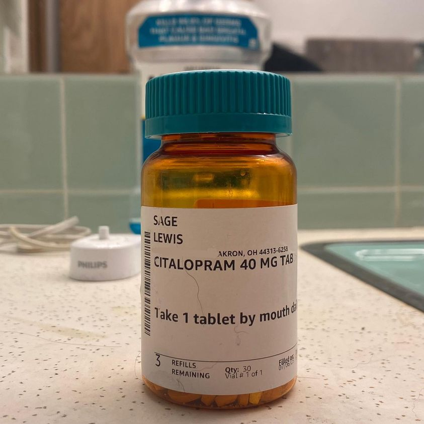

Timeline photos
I’ve been playing with the amount of antidepressants I take everyday.
I went from 40mg to 20mg. That was ok. Then I went to 20mg every other day. That’s when it went all wrong.
My family was at the Art Expo at Hardesty Park. We were sitting at a picnic table when a sweet old lady came over and asked us if we knew about Issue 1.
I said, “Yeah. That’s the thing where Republicans are trying to screw us.”
She just stared at me, I think in shock. My wife made some attempt to calm me down.
It just made it worse. “F@&?k THE REPUBLICANS!” I yelled.
The lady slunk off. My son was in shock. And then I had to get a talking to about appropriate behavior in public or something.
That little old lady instantly triggered me and filled me with rage. I believe the Republican Party is now the party of the Handmade’s Tale. And what’s worse, it’s not like most of the leaders actually believe it. They just know it makes them money and gets them votes… all at the expense of women and trans people (soon to be all LGBTQIA people.)
But I digress.
The point of this interaction is I lost control. My impulse control had left the building.
My spirit superhero is the Incredible Hulk. I am filled with rage mostly at American oppression and injustice. And that’s fine that I’m upset. But I need to be able to control my feelings so I can use that energy in the best possible way.
(This is just one story of a series of stories when I had been too easily triggered during this drug experiment time.)
I’m a guy with big emotions. I burn hot all the time. Both up and down. Good and bad.
Citalopram shaves off those sharp peaks and fills in those deep valleys. And I’m thankful for it.
I originally started this endeavor because I felt like I was thinking about suicide too much. That definitely got worse during my experiment.
I’m currently back at 40mg. I feel way better.
Please vote no on Issue 1. You can vote right now at the Board of Elections. The official voting day is August 8. It will be the only thing on the ballot. Republicans are going to come up in huge numbers because they are largely now the party of hate and take great pleasure in hurting Democrats.
Place: Akron, Ohio (41.0732, -81.5179)
Address: Akron, OH 44301